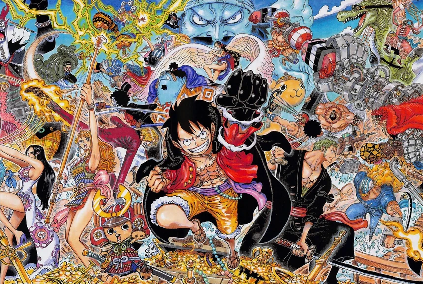

One Piece
20 in universe years before the beginning of the story of One Piece, a pirate known as Gold Roger who was known as the king of the pirates was sentenced to a public execution for his crime. However, while he was on the chopping block with the whole world watching, a man yelled at Roger asking him for the location of his massive fortune (known as the one piece) to which Roger replied that the treasure was hidden somewhere in the world, and if anyone wants it they should set sail and find it. These final words of the pirate king sparked a new age of piracy with almost everyone setting sail to become the next king of the pirates. One piece is a story about a young boy named Monkey D. Luffy with the ability to stretch his body like rubber aspiring to become the king of the pirates 20 years after the death of the previous king of the pirates, Gold Roger. However, as the story continues, we learned that everything may not be as it seems, and that the one piece may hide more than just a massive treasure. The story is made by Eiichiro Oda and is the best-selling manga of all time.
| Main Characters |
Main Villains |
Major Arcs |
| Luffy |
Arlong |
Arlong Park |
| Nami |
Crocodile |
Alabasta |
| Zoro |
Lucci |
Enies lobby |

Elden Ring
Elden ring is the latest souls game made by Hidetaka Miyazaki at the video game company FromSoftware. The story of Elden Ring follows the story of a succession war in a country known as the lands between which was sparked by a few events surrounding the god-queen Marika. Firstly, one of Marikas demigod children named Godwyn the Golden was murdered, and in her grief the god-queen Marika disappeared after shattering the source of her power: the elden ring. Following this event, a massive power vacuum spawned in the lands between, casing the remainder of Marikas demigod children to enter a massive succession war to claim the elden throne and surpass Marika as the next ruler of the lands between. This is where you as the player come into play. You as the player are a being known as a tarnished and have no demigod blood or any name of renown, the only claim you have to the throne is the fact that nobody else has claimed it yet, and so you set of on a journey to become the next elden lord, fighting and killing massive demigods in the process. Elden Ring was named Game of the year for the year of its release.